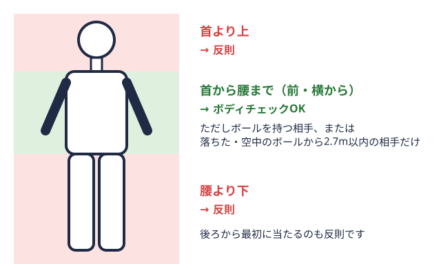

基礎スキル 2026-11-27
ラクロス ダッジのコツ｜基本4種の使い分けと1対1の練習の順番
この記事の内容
ダッジとは何か：目的は「抜くこと」より「次のプレーを作ること」基本の4種類：まずは使い分けの目安を知る「1対1で相手に寄せられると止まってしまう」「抜いたつもりでも、後ろからスティックボールを運ぶ・パスする・シュートするために使う、先に網が付いた棒状の道具。ボールは手で直接持てない。 用語辞典で見るを叩かれてボールを落とす」「いつも同じ方向にしか行けず、読まれている気がする」。スローやキャッチ、シュートの基礎に慣れてきた部員が、次にぶつかりやすいのがダッジ攻める側の選手が、1対1で守る相手をかわして前へ出るプレー。シュートやパスの機会を作る。用語辞典で見るの壁です。
用語辞典で見るを叩かれてボールを落とす」「いつも同じ方向にしか行けず、読まれている気がする」。スローやキャッチ、シュートの基礎に慣れてきた部員が、次にぶつかりやすいのがダッジ攻める側の選手が、1対1で守る相手をかわして前へ出るプレー。シュートやパスの機会を作る。用語辞典で見るの壁です。
ダッジは、攻める側の選手が1対1で守る相手をかわして前へ出るプレーです（本サイトの用語集でも同じ意味で整理しています）。「ドッジ」と書かれる場合もありますが、同じプレーを指します。
この記事では、ダッジを「基本の4種類」「抜いた後に守る意識」「ルール上の条件」「練習の順番」に分けて整理します。技の種類や手順は、公開されている米国の指導解説で共通して語られている内容を中心にまとめました。あわせて、日本の大学男子ラクロス選手を対象にした1対1の研究（修士論文）の要旨で確認できた範囲も紹介します。ルールはJLAの2026年度版公認男子競技用ルールブックを確認した内容です。指導の言葉や考え方はチームごとに違うため、あくまで整理の材料として使い、実際の動き方はチームの指導者や上級生の教えと照らし合わせてください。
ダッジとは何か：目的は「抜くこと」より「次のプレーを作ること」
ダッジを使う目的は、相手を抜いて満足することではなく、その先でシュートやパスの機会を作ることだと説明されています。米国の指導サイトでも、ダッジの直後にシュートかパスをつなぎ、動きを止めて仕切り直さない練習が勧められています。
ポジションでいえば、アタック主に相手ゴールの近くで、シュートや得点の組み立てを担う選手。男子は3人。 用語辞典で見るやミッドフィールダー攻めと守りの両方に関わり、コート全体を動く選手。男子は3人。用語辞典で見るがダッジを使う場面が多くなります。役割の全体像はアタックの役割と練習法やミッドフィールダーの役割と練習法で整理しているので、あわせて確認してください。守る側の考え方はディフェンスの役割と練習メニューにあります。
用語辞典で見るやミッドフィールダー攻めと守りの両方に関わり、コート全体を動く選手。男子は3人。用語辞典で見るがダッジを使う場面が多くなります。役割の全体像はアタックの役割と練習法やミッドフィールダーの役割と練習法で整理しているので、あわせて確認してください。守る側の考え方はディフェンスの役割と練習メニューにあります。
基本の4種類：まずは使い分けの目安を知る
英語圏の指導解説では、基本のダッジとして次の4種類が挙げられることが多く、ほかにスイムやクエスチョンマークなどの応用形が紹介されています。応用形は、基本の4種類に慣れてから取り入れる、という説明が見られます。
| 種類 | 目安になる場面 | 動きの特徴 |
|---|---|---|
| スプリットダッジ | 守る相手が正面に構えていて、片側に追い込まれていない場面 | 相手の片側を攻め、相手の腰が開いたところでスティックを体の前で持ち替えて反対側へ抜ける |
| ロールダッジ | 相手との距離が近い場面。持ち替えたい手に戻したい場面 | 外側の足を相手側に踏み込み、肩で相手を押さえるようにして、体を回転させて相手の外側へ回り込む |
| フェイスダッジ | 相手が前のめりに寄せてくる、または足元が乱れている場面 | スティックを顔の前に通して持ち替える動きを見せながら、反対側へ抜ける |
| ブルダッジ | 体格や力で優位がある場合など | 相手に体を当てて、守りの位置からずらしながら前へ出る |
どのダッジが優れているかは状況や体格、チームの戦術によって変わります。解説の中には「一つだけ覚えるならスプリットダッジ」という趣旨の考え方を紹介しているものもありますが、これも指導者の一つの意見であり、全員に当てはまるとは限りません。
スプリットダッジ：持ち替えの「間」を作る
スプリットダッジは、相手の片側へ攻めて、相手の腰が開いたところで体の前でスティックを持ち替え、反対側へ抜く動きです。バスケットボールのクロスオーバーに近い動きだと説明されています。
解説でよく挙がる注意点は、持ち替えるときの間合いです。相手との距離が足りないまま持ち替えると、スティックをチェックされやすくなります。距離、肩の入れ方、素早さのいずれかで、相手の手が届かない状態を作ってから持ち替えることがポイントとされています。
また、持ち替えるふりをして元の側へ戻る「フェイク」を使う方法も紹介されています。相手が自分の持ち替えの癖を知っている場合に役立つという説明です。
ロールダッジ：回って「守りながら」抜く
ロールダッジは、外側の足を相手側に踏み込み、肩で相手を押さえながら、その圧力を使って体を回転させ、相手の外側へ回り込む動きです。利き手側に戻りたいときや、角度のついたシュートを打ちたいときに使われる例が紹介されています。
回っている間はスティックが相手側から見えやすくなるため、肩と空いている手でスティックを守る意識が必要とされています。足が止まると、相手が合わせてきてチェックを受けやすくなる、という指摘もあります。
フェイスダッジ：顔の前を通して反対へ
フェイスダッジは、スティックを顔の前に通して、パスやシュートのように見せながらボールを保持し、反対側へ抜く動きです。相手が勢いよく寄せてくる場面や、足の運びが乱れている場面で使いやすいと説明されています。スライド（周囲の守備者が助けに来る動き）が来る場面でも、組み合わせ次第で有効という解説があります。
ブルダッジ：当たり負けしない条件を考える
ブルダッジは、相手に体を当てて守りの位置からずらし、体重と力を使って前へ出る動きです。体格や力で優位がある選手に向く、と説明されています。逆に、押し込む力が足りない状態で使うと、止められる場合があります。自分の体格やチームの方針に合わせて、使うかどうかを判断してください。
抜いた後が勝負：スティックをどこで守るか
ダッジの解説で共通して語られるのが、「抜いたあとにスティックを守り続ける」という考え方です。抜いた瞬間は、相手の体は遠ざかっていても、スティックには届く位置に残っていることがあります。
- 抜いたあとも、スティックを自分の体と相手の間に置いて保持する
- 空いている手と肩をうまく使い、スティックヘッドを相手から遠い側に置く
- 足を止めず、抜いた直後にシュートかパスへ移る
ここで知っておきたいのがクロスチェッククロスの柄の、握った両手の間の部分で相手を突き放したり押したりする反則。用語辞典で見るのルールです。JLAの2026年度版男子ルールブックでは、相手がポゼッションボールをクロスで確保して持っている状態。またはそのチームがボールを持つ権利のこと。用語辞典で見る（ボールを保持）している場合などに、クロスで相手のクロスをチェックしてもよいと定められています（ルール42）。つまり、ボールを持った状態でスティックを無防備にさらすと、チェックを受けること自体はルール上ありえます。スティックを守る意識は、この前提から生まれていると考えられます。
研究から見る1対1：接触を使う選手が多かった
日本の大学男子ラクロス選手を対象にした、1対1で攻める側が守る相手をかわすための手段に関する研究があります。立命館大学大学院の2023年度修士論文「ラクロスにおける1on1局面においてオフェンス選手がディフェンス主に自陣のゴール近くで、相手のシュートを防ぎボールを奪う選手。男子は3人。用語辞典で見る選手を躱すために用いる有効手段の解明」です。ここでは、論文の要旨で確認できた範囲だけを紹介します。個々のプレーの優劣を断定するものではなく、1つの研究の結果として読んでください。
- 対象は男子ラクロス選手20名（アタック9名、ミッドフィールダー11名）で、6m四方の正方形の中で守る側と1対1を行いました。守る側がショートクロスを持つ場合とロングクロス全長約132〜183cmの長いクロス。同時に使えるのは1チーム最大4人（ゴールキーパーを除く）。用語辞典で見るを持つ場合を、それぞれ各選手8試技ずつ行っています
- 攻める側の動き方を、守る側に触れられないようにかわす「非接触パターン」と、自分から守る側に接触して振り切る「接触パターン」に分けて分析しています
- 接触パターンを選んだ試技の割合は、守る側がショートクロスの場合で99/160（61.9％）、ロングクロスの場合で105/160（65.6％）でした
- 接触パターンで成功した試技では、失敗した試技に比べて、接触してからの軌跡が有意に短く、接触してからの守る側との距離の最大値も小さいという結果が報告されています
- 非接触パターンで成功した試技では、守る側の近くでの左右方向の最高スピードが高かったと報告されています
論文では、接触を保ち続けることで、守る側のクロスの動きや守る側自身の動きを制限できる可能性が考察されています。ただし、この研究は限られた人数を対象に、決められた広さと条件で行った実験です。実際の試合で同じ結果になるとは限らないため、練習で考えるきっかけとして使うのが適切です。
ルール上の注意：接触してよい場面・いけない場面
ダッジでは相手と体が触れる場面が多くなるため、反則を知っておくことが大切です。以下はJLAの2026年度版公認男子競技用ルールブックで確認できた主な条件です。女子競技は別のルールで運営されているため、女子の部員は女子競技用ルールで該当部分を確認してください。ルール全体はラクロスのルールをわかりやすくにもまとめています。
| 項目 | 内容（JLA2026年度版・男子ルールブックより） |
|---|---|
| ボディチェック男子で、ボールを持つ相手などに体を当てて止める行為。首から腰までの前・横からだけ認められる。  用語辞典で見る（ルール41） | 相手がポゼッションしているか、ルーズボールや空中のボールから2.7m以内にいる場合に許される。接触は首より下の正面か横からで、腰より下は不可 |
| イリーガルボディチェック（ルール70） | 最初の接触が後ろから、腰より下、首やそれより上の場合などは反則。頭でぶつかる行為は「スペアリング」という反則とされる |
| 押す動作（ルール53） | クロスのシャフトクロスの柄（持ち手）にあたる長い棒の部分。先端のヘッド（枠）につながっている。用語辞典で見るやヘッドクロスの先端にある、ボールを受ける枠の部分。内側に網が張られている。用語辞典で見るで相手を押してはならない。正当な押し方には条件がある |
| イリーガルピック（ルール54） | 守る選手の動きを妨げるために、動きながら接触することや、クロスを高く広く構えて通せんぼする行為を禁じる |
ルールブックには、チェックを受ける選手が背中を向けたり、飛び上がったり、動いたりした結果、イリーガルボディチェックのように見えるものは反則から除かれるという記載もあります。ただし、判定は審判が試合の状況を見て行うため、ここで詳しい線引きを言い切ることはできません。気になる場面は、チームの審判経験者や指導者に確認してください。
練習の順番：一人→2人→DFをつけた1対1→連続した動き
米国の指導資料では、ダッジは段階を踏んで練習することが勧められています。以下は、公開されている解説を参考にした一つの進め方です。
| 段階 | 内容 | 確認したいこと |
|---|---|---|
| 1. 一人で足の動きを確認 | コーンや目印を相手に見立てて、踏み込み・切り返しを繰り返す | 足を止めずに動けているか、スティックが体の前で守られているか |
| 2. ゆっくりした動作で型を確認 | 決めた1種類のダッジを、歩くような速さでなぞる | 持ち替えやロールのタイミング、肩の入れ方 |
| 3. 実際の速度で反復 | 一つの動きを決めて、全力のスピードで繰り返す。左右の手の両方で行う | 速度を上げたときも形が崩れないか |
| 4. DFをつけた1対1 | 6〜8回を1セットとして、相手に向かってダッジを試す。2セット程度を例とする解説がある | 相手の寄せ方に合わせて種類を選べているか |
| 5. 抜いた後まで続ける | ダッジの直後にシュートかパスまでつなげる | 動きを止めず、次のプレーへ移れているか |
一人で行う場合は、木や柱、コーンなど動かない目印があれば練習できると解説されています。非利き手での練習は慣れるまで時間がかかりますが、守る側が利き手の逆へ追い込もうとする場面があるため、両手で動けると選択肢が増える、という考え方が紹介されています。
練習の前後には、ウォーミングアップを丁寧に行ってください。切り返しや急な停止は、足首や膝に負担がかかりやすい動作です。違和感が続く場合は無理をせず、足首の捻挫予防や膝のACL損傷予防の記事も参考にしてください。体づくりの面では、体幹トレーニングや筋トレメニューも関わりますが、筋力を上げれば自動的にダッジが上達するわけではなく、動きの練習とセットで考える必要があります。
つまずきやすいポイントと見直し方
練習で起こりやすい症状と、見直し候補を並べます。原因は人によって違うため、1つずつ変えて確かめるのが基本です。
- 相手に寄せられて止まってしまう: 足が止まっていないか、相手の前足側を攻めて間合いを作れているかを見直します
- 持ち替えのときにスティックを叩かれる: 相手との距離が近すぎる可能性があります。持ち替える前に間合いを作れているかを確認します
- いつも同じ方向にしか行けず、読まれる: 利き手側だけに頼っていないか、フェイクや別の種類を使えているかを見直します
- 抜いた後に止まってしまう: 抜くこと自体が目的になっていないかを確認します。抜いた直後にシュートかパスを入れる練習に切り替えます
- ボールをよく落とす: ボールを守る位置と、スティックを握る力みを見直します。キャッチのコツやスローのコツの基本にも戻れます
動画で自分の動きを撮影して見返す方法もあります。本サイトの動画インデックスで他チームの試合映像を探し、1対1の場面を見比べるのも一つの方法です。映像の見方は試合映像分析の始め方で扱っています。ダッジの後のシュートの打ち方はシュートのコツにまとめています。
他チームのデータから攻撃の傾向を見る
ダッジの得意不得意はチーム戦術にもつながります。本サイトの関東男子の記録室では、リーグ戦データから通算の総得点・総失点などの集計を確認できます。得点で勝ってきたチームなのか、守りで勝ってきたチームなのかを眺めると、自分のチームで1対1をどれだけ重視するかを考える手がかりになります。リーグの勝敗や得失点差は関東男子の順位表や、全国のチーム一覧から各チームのページへ進んで確認できます。
入部したばかりの時期の練習の流れは新入生の練習メニューでまとめています。用語で分からない言葉が出てきた場合は、ラクロス用語集も使ってください。
まとめ
ラクロスのダッジは、種類・抜いた後の守り方・ルール・練習の順番に分けて整理すると、取り組みやすくなります。
- 基本はスプリット・ロール・フェイス・ブルの4種類。場面や体格によって合う技が変わるため、状況に応じた使い分けを考える
- 抜いた後も、スティックを体と相手の間に置いて守り、シュートかパスまで動きを止めない
- ボディチェックは首より下の正面か横から、腰より下は不可など、JLAルールブックで確認できる条件を知っておく
- 1つの研究では、接触を使う選手が6割以上と多く、成功した接触の試技では接触後の軌跡が短かった。ただし限られた条件での結果である
- 練習は一人での足の動き→型の確認→全速度の反復→DFをつけた1対1→抜いた後まで、の順で、形が崩れたら一つ前の段階に戻る
効果の出方には個人差があり、本記事の内容は公開されている解説をもとにした一般的な整理です。実際の指導方針はチームや指導者によって異なるため、チームの教えを優先し、疑問があれば上級生やコーチに確認してください。
出典
- 2026年度版 JLA公認男子競技用ルールブック（第2版）| JLA（ボディチェック、クロスチェック、押す動作、イリーガルピック、イリーガルボディチェックの条文）
- 10人制男子競技｜公認競技ルール | JLA
- 10人制女子競技｜公認競技ルール | JLA
- ラクロスにおける1on1局面においてオフェンス選手がディフェンス選手を躱すために用いる有効手段の解明（2023年度修士論文）| 立命館大学大学院（対象人数・接触パターンの割合・成功試技の傾向）
- Lacrosse Dodges | Stringers Society（各ダッジの使い方・注意点・練習の考え方、英語）
- The All-Important Split Dodge | Lax All Stars（スプリットダッジの位置づけ、英語）
このチーム・この競技を応援したい方へ
ツナカレでは大学の部活・団体への協賛先を探せます。
取材してほしい部活を募集中
頑張っている部活・団体を、ツナカレ運営メディアが取材でご紹介します。
部活を続けながら、就活も進めたい方へ
体育会の学生のための就活相談です。無料で、メールアドレス・学年・所属の入力だけで始められます。